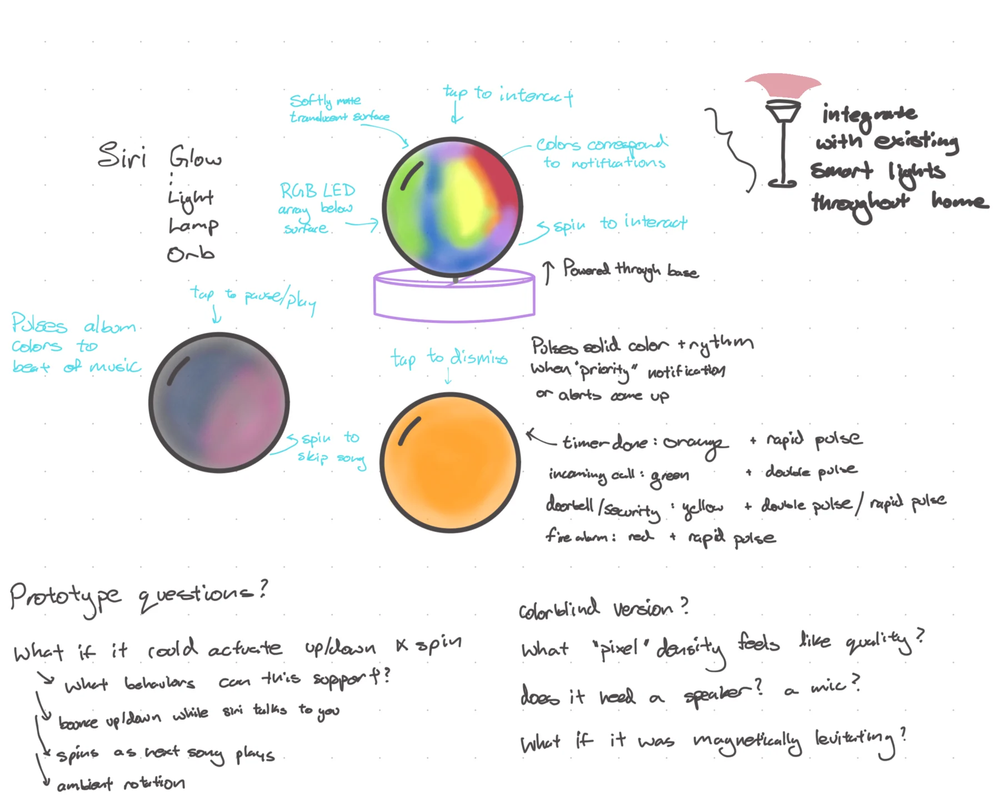
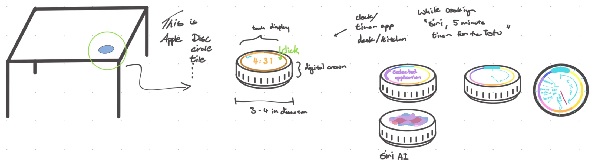
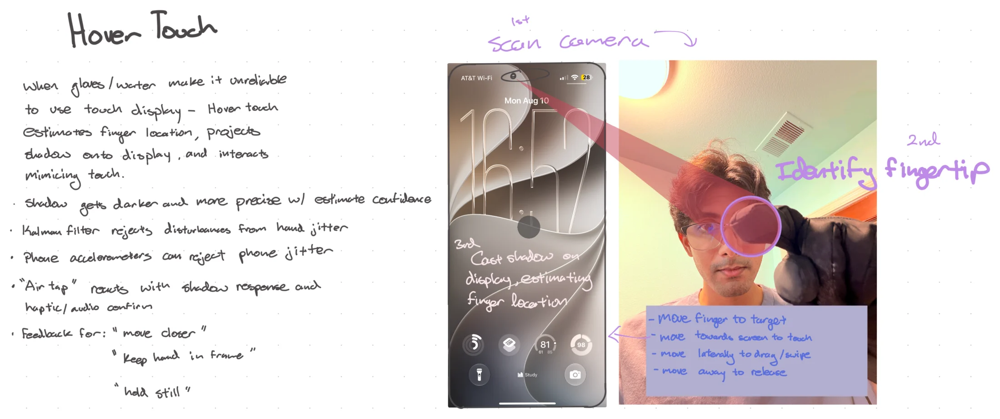
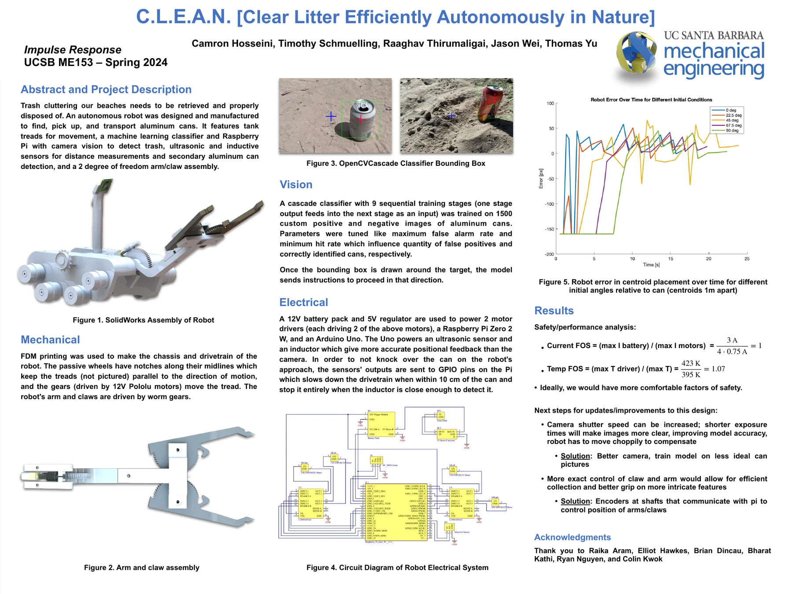
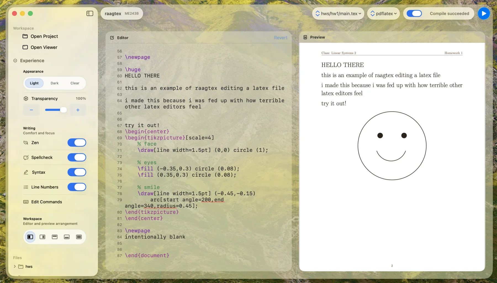
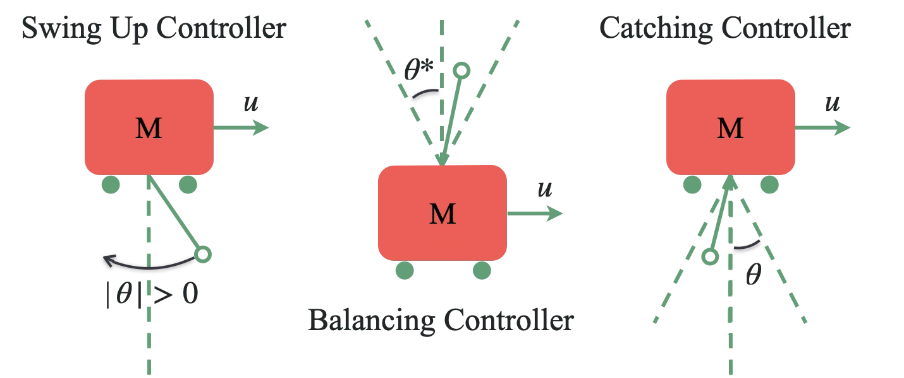
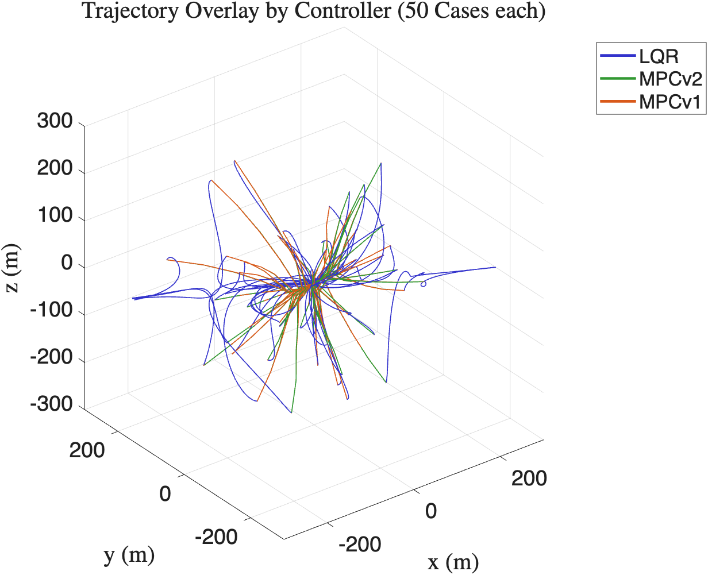

Orb · Ambient information
Can a device communicate without demanding a screen?
A softly matte, translucent surface uses color, pulse, touch, and rotation to express music, timers, calls, and home alerts.
Prototyping designer · Mechanical engineer · Controls researcher
I move between physical mockups, visual stories, sensing, and code to explore how people and devices respond to one another.
A prototype is not a miniature final product. It is a question with a physical form.
Interaction study · Aug 2026
A palm-sized companion for surfaces: a display you can rotate, press, and feel without turning every interaction into another phone session.

Two more open questions
These are deliberately early. Each sketch identifies a behavior worth testing rather than pretending the implementation is already resolved.

Orb · Ambient information
A softly matte, translucent surface uses color, pulse, touch, and rotation to express music, timers, calls, and home alerts.

Hover Touch · Robust input
For gloves or wet conditions, a camera-estimated fingertip casts a responsive shadow; moving toward the display becomes a tap and moving laterally becomes a drag.
Integrated prototype · 10 weeks · Team lead
Five people combined vision, motion, sensing, and grasping into a robot that could find, approach, verify, and lift an aluminum can.

I can keep a longer prototype moving: define the next useful test, help specialists connect their work, and carry an idea through to a functioning physical system.
Native software product · Ongoing
A native Apple-platform LaTeX cockpit built around one product question: can technical writing, compile feedback, and PDF preview share one calm workspace?

I started Raagtex because many LaTeX tools make the writing-to-PDF loop feel more complicated than the work itself.
For the technical reader
These projects use control theory as behavior design: estimate what a system is doing, choose an action, and recover when the world does not behave exactly as expected.

Physical robotics
Identified a physical system from experiments, estimated its state, and built a mode-switching controller that could swing up, catch, balance, and return to rest.
Technical project →
Constrained autonomy
Compared autonomous guidance strategies across uncertain starting conditions while balancing convergence, fuel use, time, and actuator constraints.
Technical project →Click outside the sketch or press Esc to close.